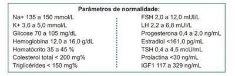

Paciente de 23 anos de idade, G=0 P=0 A=0, encontra-se em amenorreia há 8 meses, apresentando fogachos, insônia, irritabilidade e fadiga. De antecedentes pessoais, refere ter tido parotidite na infância e Tireoidite de Hashimoto, diagnosticada aos 18 anos, em tratamento e controlada. Seu per l hormonal demonstrou: Prolactina, TSH, T4 livre normais e FSH elevado. Neste caso, qual a principal hipótese diagnóstica?
Paciente de 39 anos apresenta-se para consulta ginecológica referindo desejo de engravidar. Na anamnese dirigida, refere apresentar amenorreia quando interrompe o uso de anticoncepcional oral e que não apresenta menstruações desde a adolescência. O desenvolvimento puberal teria sido conseguido graças ao uso de hormônios. Nesse caso, é incorreto afirmar:
Mulher, 32 anos, casada e previamente hígida, é encaminhada ao ambulatório por amenorreia há três meses e galactorreia à expressão de início mais recente. Relata menarca aos 13 anos com ciclos menstruais regulares, sem uso de contraceptivos orais. Realiza por conta própria os seguintes exames laboratoriais: TSH = 0,8mUI/mL (Valor de referência - VR: 0,4-4,0); T4 livre = 1,5ng/dL (VR: 0,8-1,8); Prolactina = 64ng/dL (VR: até 25). Considerando a hipótese diagnóstica mais provável, o próximo exame a ser solicitado é:
Uma paciente em amenorreia é diagnosticada como tendo Síndrome de Asherman. A causa dessa amenorreia é:
Adolescente, 13 anos, queixa-se que ainda não menstruou. Relata que a irmã menstruou aos 12 anos. Nega sexarca. Não apresenta outras queixas. Exame físico: apresenta-se em bom estado geral, estatura no percentil 50, IMC 21 Kg/m², mamas estadiamento de Tanner M1 e pelos P4. Genitália externa com pequenos lábios com extensão até a metade da vulva, clitóris de 1 cm até a base, mucosa vulvar avermelhada, hímen integro, vaginometria de 7 cm. Considerando as recomendações da Sociedade Americana de Medicina Reprodutiva, qual a melhor opção para abordagem inicial deste caso?
Sobre a indicação para o teste com GnRH endovenoso nas amenorreias por disfunções hipotálamo-hipo sárias, assinale a alternativa correta:
Nos casos de amenorréia em que o teste da progesterona é negativo, deve-se investigar:
Adolescente de 17 anos, apresenta amenorreia primária, queixa-se de dor em baixo ventre, de caráter intermitente. É virgem e o exame ginecológico revelou desenvolvimento mamário normal, com presença de pelos pubianos e axilares. A ultrassonogra a pélvica apresentou útero de volume normal, com imagem heterogênea na cavidade endometrial. O diagnóstico provável é:
Mulher de 28 anos referiu que está sem menstruar há cinco meses, embora sempre tenha tido um ciclo menstrual regular. Negou outros sinais clínicos, mas relatou ganho de peso no último ano. Nesse caso, após descartar gravidez, a conduta diagnóstica mais indicada é:
Em paciente com resultado negativo para os testes de estrogênio e progesterona, uma das causas de amenorreia é:
Menina de 18 anos vem à consulta ginecológica com a mãe referindo ausência de menarca até então. Não iniciou a atividade sexual ainda. Ao exame físico, apresenta altura e peso adequados para a idade, mamas bem desenvolvidas, genitália normal com vulva sem pelos (ausência de pubarca) e leve abaulamento bilateral em região inguinal. Considerando a hipótese diagnóstica, analise as assertivas abaixo: I - O cariótipo da paciente é XX. II - O tratamento consiste na gonadectomia bilateral e reposição de estrogênio. III - A paciente poderá ter dificuldades na relação sexual, uma vez que a vagina é mais curta neste caso. Quais estão corretas?
Paciente de 16 anos, com estatura normal e presença de pelos pubianos e axilares, refere nunca ter menstruado. Ao exame físico, identifica-se apenas o terço final da vagina. Ao exame de imagem, verifica-se útero ausente com ovários tópicos e de volume normal. O cariótipo é 46XX. A classificação desse distúrbio de disfunção sexual e a terapia mais indicada nesse caso, respectivamente, são:
Paciente de 25 anos com quadro de amenorréia secundária, referindo ter sido submetida a uma curetagem uterina por abortamento espontâneo há 5 meses. Apenas com esses dados é possível suspeitar de:
Quanto às medicações que causam hiperprolactinemia, considere os itens a seguir. I. Risperidona. II. Domperidona. III. Haloperidol. IV. Nifedipina. Assinale a alternativa correta.
Paciente 15 anos, procura atendimento ginecológico por ainda não ter apresentado a primeira menstruação. Ao exame físico foi observado ausência de pelos genitais e axilares, não crescimento das mamas. Refere ainda di culdade de distinguir cores e odores. O cariótipo foi solicitado e o resultado foi 46XX. Qual a síndrome associada ao quadro descrito?
Paciente de 25 anos vem à consulta de climatério. Nuligesta, casada há 1 ano. Sexarca aos 19 anos. Menarca aos 13 anos. No início, ciclos irregulares, na sequência, ciclos regulares e, mais recentemente, oligomenorreia e amenorreia há 1 ano. Refere fogachos 6 a 8 episódios/dia, secura vaginal e dispareunia. Antecedentes pessoais: nega tabagismo, etilismo, cirurgia e uso de quimioterapia. PA 120x80 mmHg, peso 68 kg, altura 160 cm, IMC: 26,56. Nega uso de qualquer medicamento. Traz 4 exames de BhCG quantitativo, todos negativos, sendo o último há 10 dias. Exame físico: mamas tamanho normal, ausência de nódulos palpáveis, axilas com gânglios impalpáveis. Abdome sem particularidades. Órgãos genitais externos (OGE): pili cação e formações labiais normais. Especular: conteúdo escasso, colo epitelizado. Toque vaginal: colo cartilaginoso, pequeno, corpo uterino em retroverso exão (RVF) e de tamanho normal. Anexos e paramétrios impalpáveis. Para confirmar o diagnóstico de insuficiência ovariana primária, quais exames devem ser solicitados?
Paciente de 26 anos, G3P1A2 (fez 2 curetagens uterinas evacuadoras, a última há 11 meses). Procura Unidade Básica de Saúde queixando-se de falta de menstruação, quadro esse iniciado há 9 meses. Não faz anticoncepção e nega uso de outros medicamentos. Paciente deseja engravidar. Refere telarca aos 11 anos e menarca aos 13 anos. Antecedentes menstruais: ciclos menstruais regulares pós-menarca. Antecedentes pessoais: nega cirurgia, etilismo e tabagismo. Fez 3 exames do Beta HCG que foram todos negativos, sendo o último há 10 dias. Traz os seguintes exames realizados há 1 semana: FSH 8 mUI/mL, prolactina 10 ng/mL, TSH 2,5 mUI/mL, T4 livre 1,2 ng/dL, testosterona total 60 ng/dL. Peso: 62 kg, altura 1,58 m. IMC: 24,89. Exame físico: sem alterações. Exame ginecológico: mamas sem alterações. Órgãos genitais externos (OGE): pili cação normal para sexo e idade. Formações labiais normais. Especular: conteúdo escasso. Colo epitelizado. Toque: colo cartilaginoso, útero em anteverso exão (AVF) d e tamanho normal. Anexos e paramétrios não palpáveis. Teste do estrogênio + progestogênio foi negativo. Nesse caso, qual a causa da amenorreia secundária, o método terapêutico e a conduta, respectivamente?
Mulher de 18 anos, virgem, com quadro de amenorreia primária, veio ao ambulatório com exames para serem avaliados: USG revelando ausência de útero, dosagem de testosterona normal, prolactina e TSH normais. Cariótipo 46, XY. Qual o provável diagnóstico para esse caso?
Em relação à Insu ciência Ovariana Precoce (IPO), conhecida anteriormente como falência ovariana prematura, ou popularmente denominada menopausa precoce, é correto afirmar:
Sobre amenorreias secundárias, assinale a alternativa INCORRETA.
Marina tem 25 anos e está com atraso menstrual há 3 meses. Apresenta ciclos irregulares e não faz uso de nenhum método anticoncepcional. Apresenta teste rápido de gestação negativo, exames de prolactina e TSH normais porém mantém amenorreia. O melhor passo a ser dado na investigação do quadro é realizar:
A amenorreia é um sintoma frequente nos consultórios, sobre as patologias que concorrem com este sintoma está correto afirmar:
Um casal procura a clínica de reprodução humana após 4 anos tentando engravidar sem sucesso. A mulher tem 35 anos e o homem 43 anos, sem comorbidades. Ela refere que está sem menstruar há 9 meses. Os exames solicitados mostraram FSH=77 UI/mL; LH=42 UI/mL; Prolactina=16 ng/mL; biópsia ovariana com ausência de folículos. Espermograma do marido estava normal. Qual seria o diagnóstico e tratamento proposto?
Paciente com amenorreia primária e bom desenvolvimento de caracteres sexuais secundários sugere:
São achados clínicos em paciente com síndrome da insensibilidade aos androgênios forma completa:
Paciente com 18 anos de idade procurou serviço de ginecologia devido à amenorréia primaria. Ao exame físico, havia caracteres sexuais secundários normais e agenesia de vagina, e à laparoscopia, presença de útero rudimentar e ovários. O diagnóstico é:
Paciente do sexo feminino, 20 anos, é trazida para consulta ambulatorial por sua mãe com queixa de amenorreia há cinco meses. A paciente faz dieta para emagrecer desde os 16 anos, pesa rigorosamente o volume de comida em seu prato a cada refeição e frequenta academia de ginástica diariamente por pelo menos 2 horas durante os últimos três anos. Seu índice de massa corporal é de 18kg/m². Assinale a alternativa CORRETA, que apresenta a hipótese diagnóstica mais provável.
Paciente de 18 anos vem a Unidade Básica de Saúde, relatando ciclos menstruais irregulares desde a menarca e que há 6 meses não menstrua. Informa que ainda não teve relação sexual. Durante a consulta estava acompanhada da mãe. Nega doenças prévias ou uso de medicamentos. Ao exame clínico apresenta caracteres sexuais secundários normais e anatomia pélvica normal. Assinale a hipótese diagnóstica MENOS PROVÁVEL:
Mãe comparece com lha de 17 anos que nunca menstruou. A menina não apresenta desenvolvimento puberal (P1, M1 de Tanner), porém tem estatura normal para a idade. Não apresenta estigmas somáticos sindrômicos. Os exames hormonais evidenciaram FSH e LH elevados, porém estradiol baixo. O diagnóstico mais provável nesse caso é
Mulheres atletas de alta performance podem apresentar distúrbios endócrinos e metabólicos causando diversas afecções, como a tríade da mulher atleta. Assim, essas mulheres podem apresentar:
Adolescente de 17 anos de idade, com queixa de amenorreia primária, recebe diagnóstico de disgenesia gonadal pura. Ao exame físico, espera-se encontrar:
O Matriciamento, ou apoio matricial, é um novo modo de produzir saúde, em que duas ou mais equipes, num processo de construção compartilhada, criam uma proposta de intervenção pedagógico-terapêutica. Sobre o tema, assinale a alternativa INCORRETA.
Paciente de 16 anos com caracteres sexuais secundários não desenvolvidos foi levada pela mãe ao ginecologista por amenorréia primária. O exame da genitália externa revelou desenvolvimento infantil e hímen íntegro. Foi medicada com progestagênio por 10 dias e não menstruou. Ao ser medicada com estrogênio e progesterona, menstruou. A hipótese diagnóstica mais provável é
Adolescente de 17 anos com desenvolvimento de caracteres sexuais secundários desde os 13 anos, com queixa de amenorréia primária, cólicas cíclicas mensais de forte intensidade e aumento do volume abdominal. O provável diagnóstico é:
A síndrome de Rokitansky-Kuster-Hauser é:
Paciente com 14 anos apresenta quadro de amenorréia primária, com baixa estatura, ausência de desenvolvimento puberal e com cariótipo de 45 X0.Tal quadro determina o diagnóstico de:
Na amenorreia que cursa com FSH elevado pode-se concluir:
Sobre a abordagem da amenorreia secundária, assinale a alternativa CORRETA:
A anosmia e o hipogonadismo hipogonadotrófico são características da síndrome de:
A amenorreia primária se caracteriza pela ausência de menstruação em meninas que nunca apresentaram uxo menstrual espontâneo. De acordo com esse tema, marque a opção CORRETA:
Deve ser indicado para uma paciente de 19 anos de idade que nunca menstruou e que apresenta caracteres sexuais femininos adequadamente desenvolvidos e possuí cariótipo 46, XY:
Uma paciente submetida a um parto normal que evoluiu com uma hemorragia pós parto e exigiu curetagem e 2 unidades de sangue. Quando questionada sobre amamentação, ela explicou que amamentou por seis meses. De lá para cá tem menstruado em pequena quantidade e duração, mas regularmente. Qual dos seguintes é o diagnóstico mais provável?
M.T., de 23 anos, procurou o posto de saúde com queixa de amenorreia. Refere irregularidade menstrual desde a menarca, aos 13 anos; por isso o médico anterior prescreveu ciclo 21, aos 16 anos, o que a deixou com ciclos regulares. Porém, a paciente deseja engravidar e cessou o anticoncepcional por conta própria, menstruou logo após o término da cartela e está há 5 meses sem menstruar. Refere que, depois de deixar de tomar o anticoncepcional, teve aumento de peso, queda de cabelos, manchas escuras na axila, piora da acne e aumento de pelos. Nega outras queixas. Antecedentes pessoais: vacinas em dia, sem doenças e alergias. Antecedentes familiares: avó paterna,hipertensão; avó materna, diabetes; mãe hipertireoidismo. Antecedentes menstruais: ciclos de 4/30 dias nos últimos 8 anos. Data da última menstruação = 30.06.2015; coitarca = 17 anos, 1 parceiro; nuligesta. Para confirmar diagnóstico, devem ser solicitados os seguintes exames:
R.C.T, 18 atividade sexual. Relata estar muito ansiosa pois irá prestar ENEM no próximo mês. Traz ultrassonogra a pélvica e dosagem de Prolactina e TSH, todos normais. TRATA-SE DE:
Paciente de 22 anos de idade chega à consulta na Unidade Básica de Saúde com queixa de atraso menstrual de cinco semanas. Informa que no último ano, sua menstruação estava irregular e cada vez "demorando mais tempo para chegar". Utiliza como método contraceptivo o dispositivo intrauterino de cobre há dois anos e cóndom masculino. Hoje realizou teste rapido para gravidez com resultado negativo, Ao exame: IMC de 28Kg/m² e sem nenhuma outra alteração. Assinale a MELHOR conduta propedêutica inicial.
Uma paciente de 15 anos de idade, informa ainda não ter menstruado. Ao exame clínico foi identi cada vulva de aspecto normal, distribuição de pelos padrão feminino. Mamas em Tanner 4. Nega dor pélvica ou cólicas. A altura da paciente é 1,52m e o cálculo do IMC foi 21. Quanto aos exames complementares para diagnóstico diferencial do quadro atual da paciente, assinale quais devem ser solicitados:
Leia o caso clínico a seguir. Mulher de 22 anos, nuligesta, última menstruação há 50 dias, é atendida no pronto-socorro com quadro de dor pélvica aguda, em fossa ilíaca direita (FID), associada a sangramento vaginal. Ao exame físico: afebril, pálida, dor abdominal, ao toque vaginal nota-se presença de massa anexial em FID e dor à mobilização cervical. A hipótese diagnóstica mais provável é:
A síndrome dos “ovários resistentes” também é chamada de:
Caso uma mulher se encontre em amenorreia, é correto afirmar que quando o teste da progesterona:
Na mulher o hipogonadismo gonadotrópico é uma das causas de amenorréia primária. O hipogonadismo gonadotrópico ocorre quando?
Paciente de 18 anos, solteira, sem parceria, procura atendimento médico por quadro de amenorreia primária. Não iniciou vida sexual. Ao exame físico, apresenta mamas desenvolvidas, pelos pubianos escassos e canal vaginal em torno de 2,0 cm. Traz ultrassonogra a pélvica com útero ausente e ovários não visualizados e exame de cariótipo 46 X,Y. Qual a melhor conduta a seguir, para esse caso?
A síndrome de Sheeham está associada:
São características que podem ocorrer na Síndrome de Turner, EXCETO:
Uma paciente de 14 anos de idade, com dor pélvica cíclica há 6 meses, refere não ter apresentado menarca. Há desenvolvimento normal de caracteres sexuais secundários, com mamas em estágio M4 e pili cação em estágio P5. A respeito desse caso clínico e considerando os conhecimentos médicos correlatos, assinale a alternativa correta.
A falha da menarca, isto é, ausência da primeira menstruação espontânea caracteriza a amenorréia primária que deverá ser investigada quando:
Mulher de 20 anos, nuligesta, apresentando ciclos menstruais muito longos, cando até 3 meses sem menstruar. Teste de estimulação com progesterona positivo. Dosagem de LH 3 vezes superior à dosagem do FSH. A causa mais provável é:
Associe as situações clínicas (primeira coluna) aos padrões esperados de gonadotrofinas (segunda coluna). 1 - Menopausa precoce; 2 - Síndrome de Turner; 3 - Agenesia uterina (síndrome de Rokitansky); 4 - Síndrome dos ovários policísticos; 5 - Tumor com compressão da haste hipofisária. ( ) Níveis de gonadotrofinas elevados. ( ) Níveis de gonadotrofinas normais. ( ) Níveis de gonadotrofinas baixos. A sequência numérica CORRETA, de cima para baixo, da segunda coluna, é:
Mãe leva lha de 16 anos ao ginecologista com história de a lha nunca ter menstruado. Ao exame físico, o desenvolvimento mamário é classificado como M1, os pelos pubianos como P1. A dosagem plasmática revela estradiol baixo e FSH e LH elevados. A ultrassonogra a pélvica revela útero presente com 15 cc e ovários não visualizados. O cariótipo solicitado foi XX. O provável diagnóstico nesse caso é:
Paciente de 28 anos queixa-se de amenorréia desde o último parto realizado há 4 anos. Refere que fora um parto vaginal complicado com sangramento abundante e que necessitou de transfusão sanguínea. Em relação ao diagnóstico mais provável, é correto afirmar que: I - o FSH, o LH e o GH estarão diminuídos; II - trata-se de Síndrome de Sheehan; III - trata-se de hiperplasia de glândula pituitária; IV - ocorre queda de pêlos pubianos e axilares; V - ocorre aumento da quantidade de leite durante a amamentação
A hiperprolactinemia pode estar relacionada a todos os listados abaixo, EXCETO
Em relação à prolactina, assinale a alternativa INCORRETA.
Em uma puberdade normal, a primeira alteração encontrada é
Mulher de 30 anos de idade, nuligesta, desejando engravidar há mais de 01 ano, apresenta menstruações a cada 45 dias e vem ao consultório do ginecologista trazendo os seguintes resultados de exames: prolactina discretamente elevada, TSH aumentado e T4 livre abaixo dos níveis normais. A conduta mais indicada a ser adotada para essa paciente é tratar
Jovem com 16 anos procura o Ambulatório de Ginecologia devido a Amenorréia Primária. Os achados ao exame físico demonstram estatura de 1,40 cm, baixa implantação de cabelos, cúbito valgus, hipoplasia mamária e da genitália. Ultrassonografia pélvica demonstra gônadas em fita. Esse quadro clínico nos sugere:
Paciente de 19 anos nunca menstruou e não teve desenvolvimento de caracteres sexuais secundários até o momento. Provável diagnóstico e tratamento:
As condições abaixo listadas são causas de amenorreia secundária, EXCETO:
Assinale a alternativa CORRETA sobre a falência ovariana precoce (FOP).
A principal causa de amenorreia secundária eugonadotrófica é
Jovem de 17 anos de idade, do sexo feminino queixa-se que não menstrua há 4 meses. Conta que um ano antes da menstruação parar menstruava a cada 45-60 dias. Há 2 meses atrás outra médica lhe prescreveu medroxiprogesterona 10 mg VO por dia durante 10 dias e após 4 dias da interrupção teve sangramento menstrual. Nega outros sintomas, comorbidades, antecedentes pessoais relevantes. Nega uso de medicamentos e drogas ilícitas. Nega sexarca. A dosagem de hormônio tireoestimulante foi de 11,38 mUI/ml (normal de 0,27 a 4,2 mUI/ml) e da prolactina 41,67 ng/ml (normal de 4,79 a 23,3 ng/ml). Dosagens de FSH, LH e estradiol dentro de valores normais. Em relação ao caso acima apresentado não seria correto afirmar: I. Teste de progesterona positivo com dosagem de FSH dentro da normalidade pode demonstrar comprometimento de compartimento I, III e IV; II. O hormônio liberador de tireotrofina diminui a liberação de GnRH; III. O hipotireodismo normalmente cursa com diminuição da serotonina e da dopamina; IV. O valor da prolactina é compatível com adenoma hipofisário e por isto está indicada ressonância magnética; V. O tratamento com levotiroxina poderá restabelecer os ciclos ovulatórios. A seguinte alternativa contempla ao solicitado no enunciado:
Adolescente de 17 anos queixa-se de nunca ter menstruado. Ao exame físico, sua genitália externa é normal para a idade, peso = 58 kg, estatura de 1,64 m e envergadura de 1,61. A ultrassonogra a não identi cou útero. Dosagem de FSH = 4,8 mUI/mL. O diagnóstico mais provável é:
Mulher de 36 anos de idade, G1P1, refere atraso menstrual de 5 meses sem outras queixas associadas. Faz uso de camisinha como método contraceptivo. Nega doenças crônicas e uso de medicações. É tabagista há 10 anos e apresenta um índice de massa corporal de 28,5 kg/m². Considerando essa situação e os conhecimentos médicos a ela relacionados, julgue o item a seguir. Inicialmente, é essencial descartar gravidez, pois é a causa mais comum de amenorreia secundária.
Mulher, 33 anos, com parto vaginal há 60 dias, durante o qual apresentou intensa hemorragia, necessitando de transfusão, vem a consulta por não estar conseguindo amamentar o seu bebê. Queixa-se de que o leite não desceu. Não apresentou menstruação nesse período. No exame físico, apresenta mamas ácidas, sem leite a ordenha manual; vulva sem pelos pubianos; não há secreção vaginal ao exame especular. O provável diagnóstico é de:
Insuficiência ovariana prematura também conhecida como menopausa precoce pode ter inúmeras causas,
Ana,19 anos, informa que nunca menstruou, mas isso não a incomoda, porque é bailarina desde a infância e viaja muito com a companhia. Só veio a consulta porque a sua mãe agendou e cobra muito a sua avaliação por um especialista. No momento, encontra-se ensaiando exaustivamente, porque vai participar de uma apresentação internacional muito importante em 90 dias. A amenorreia primária das bailarinas é de origem:
Mulher, 35 anos, refere tonturas, náuseas, vômitos e dor abdominal há 1 mês, que pioraram há 1 semana. Há 8 anos apresenta apatia, fraqueza, sonolência diurna e depressão. Nega outras queixas. Antecedentes: G3P2A1, em amenorreia desde o último parto há 8 anos quando apresentou hemorragia vaginal com necessidade de transfusão sanguínea. Não amamentou lho. Exame físico: fala lenta e rouca, pele ressecada, edema de face e MMII, ausência de pelos pubianos e axilares, tireoide normopalpável, FC = 56 bpm; PA = 80 X 55 mmHg. Sem outras alterações. Exames laboratoriais: Hb = 9,6 g/dL; GB=7.400/mm³; Plaquetas =150.000/mm³; glicemia: 63 mg/dL; creatinina: 0,9 mg/dL; sódio: 134 mEq/L; potássio: 5,6 mEq/L. Quais alterações hormonais são compatíveis com a hipótese diagnóstica mais provável?
Mulher de 35 anos apresenta, dois meses após o parto, alteração de campo visual, insu ciência adrenal secundária, T4 livre baixo com TSH normal, associado à suspensão de lactação. Sobre o quadro relatado, é correto afirmar que:
Paciente de 35 anos busca atendimento médico por amenorreia secundária. Refere que seu ciclo é irregular há muitos anos. Traz beta-hCG negativo realizado uma semana antes. Nega fogachos, alteração da libido e uso de medicamentos. Refere não ser muito ativa e não realizar atividades físicas. IMC = 32. Os exames realizados apresentam os seguintes resultados: prolactina = 28; TSH = 7,0; T4 livre = 0,2; FSH = 0,5 e LH = 0,8. O diagnóstico mais provável para o caso é:
Paciente de 34 anos veio à consulta por amenorreia secundária. Em sua história clínica constava, como único fato relevante, uma curetagem uterina por abortamento espontâneo realizada há 6 meses, cujo exame patológico indicou restos ovulares, restos teciduais e miométrio. Ao exame físico, não apresentava anormalidades. Após obter o resultado negativo para o hCG, o médico solicitou dosagens de hormônio tireoidiano (TSH) e de Prolactina (PRL), que foram normais. Posteriormente, foi realizado o teste de Progesterona (P) seguido pelo teste de Progesterona com Estrogênio (P + E) e, por fim, uma histerossalpingografia. Com base na hipótese diagnóstica e na sequência dos exames realizados, pode-se afirmar que:
Em paciente com amenorréia primária, excluída gravidez, com útero normal e caracteres sexuais presente ao exame físico, assinale a alternativa que contém um exame que não é necessário:
A principal causa de amenorreia primária é a síndrome de:
Assinale a INCORRETA:
Uma paciente apresenta amenorréia primaria. Ela tem baixos niveis de FSH, LH e estrogênio circulantes. Possui cariótipo feminino normal e desenvolvimento dos caracteres sexuais secundários ausentes. Qual dos itens a seguir também poderá ser observado nesta paciente?
Corresponde a uma associação correta entre síndrome e cariótipo de causa de amenorreia secundária:
Amenorréia é a ausência ou cessação anormal da menstruação de forma temporária ou definitiva durante o período reprodutivo. Amenorréia primária é a ausência de menstruação espontânea aos 14 anos em pacientes sem caracteres sexuais secundários ou aos 16 anos em pacientes com desenvolvimento normal dos caracteres sexuais secundários. Amenorréia secundária é o intervalo entre menstruações igual ou maior que 90 dias, após apresentar períodos pregressos de fluxos menstruais normais ou anormais. Considerando uma paciente de 18 anos que comparece na consulta com o ginecologista por amenorreia primária, assinale a alternativa CORRETA.
Paciente com 21 anos, amenorreia primária, cariótipo 46XY, apresenta estatura 1,65 m, mamas com estadiamento puberal Tanner M1P1. As dosagens de FSH e LH estavam altas (maiores que 40 mUI/ml), dosagem de estradiol baixa (menor que 20 pg/dl) e a prolactina normal (15 ng/dl). Realizado teste da progesterona que foi negativo. O teste de GnRH foi positivo. A hipótese diagnóstica é:
Casal procura ginecologista com desejo de engravidar. A mulher é portadora de Síndrome de Turner e está medicada com anticoncepcional hormonal oral combinado e menstruando regularmente. O marido é saudável e com espermograma normal. Quanto à orientação a ser dada ao casal, assinale a alternativa correta.
Qual a orientação a ser dada a uma paciente com Síndrome de Rokitansky quanto ao desejo de gestação?
J.R.S., 18 anos, com amenorreia primária, exibindo desenvolvimento normal das mamas, altura igual à envergadura com pubo-pé e pubo-vértice simétricos, distribuição dos pelos púbicos ginecoide e ausência do canal vaginal. Tendo em vista tais achados clínicos, qual a alternativa correta?
Usuária do sexo feminino, 19 anos de idade, procura atendimento porque nos últimos 3 anos já fez vários tratamentos para infecção de bexiga, sem sucesso. O último episódio teve início há 12 dias com ardor à micção, polaciúria e noctúria. Aos 6 anos de idade tratou sarcoma uterino com quimio e radioterapia. Nunca menstruou. Sexarca aos 15 anos e de 3 anos para cá percebe secura vaginal e dispareunia profunda. Ao exame físico estatura de 157cm e peso de 51kg, mamas hipoplásicas, pili cação genital escassa, grandes e pequenos lábios hipotró cos. Ao toque simples vagina com amplitude menor que 2 centímetros e colo posterior, puntiforme e com menos de 1 centímetro de diâmetro; corpo a anexos impalpáveis. Ao exame especular diminuição da rugosidade vaginal. Ultrassom pélvico demonstrou útero infantil e ovários atró cos. Teste de progesterona e estrogênio negativos. Dosagem de FSH 168,34 mUI/ml (normal de 3,5 mUI/ml à 134,8 mUI/ml) e de estradiol 2,43 pg/mL (normal de 12,5 pg/mL à 498 pg/mL). Parcial de urina com leucocitúria moderada e sem outras alterações. Urocultura negativa. Em relação à amenorreia que esta paciente apresenta assinale as afirmativas verdadeiras. I – É uma amenorreia primária do compartimento II e III. II – É uma amenorreia primária do compartimento I. III – É uma amenorreia primária do compartimento III e I. IV – É uma amenorreia primária do compartimento II. V – Existe uma falência ovariana precoce. A seguinte alternativa que contempla o enunciado desta questão:
Revisar: possível letra faltando em enunciado
Uma adolescente de 14 anos teve menarca há 2 anos. Há 3 meses está em amenorreia. Qual é a primeira hipótese diagnóstica?
Todas as sentenças abaixo referem-se a Amenorreia Primária. Identifique as Verdadeiras (V) e as Falsas (F). I. Nos casos de hipogonadismo, a dosagem de estradiol e progesterona pode indicar se o problema é central ou ovariano. II. Pacientes com hipogonadismo hipergonadotró co devem ser avaliadas com cariótipo, pois a etiologia pode ser a disgenesia gonadal. III. Se a paciente apresentar desenvolvimento de mamas e ausência de útero e vagina, o cariótipo pode diferenciar agenesia mülleriana de insensibilidade androgênica. IV. Pacientes com deficiência de GnRH apresentam hipogonadismo hipergonadotrófico. V. Hímen imperfurado pode ser causa de amenorreia se a paciente não tem hipogonadismo. Assinale a opção CORRETA:
Revisar: possível letra faltando em enunciado
Amenorreia é a ausência de menstruação no menacme, no período em que deveria acontecer. Considere os seguintes quadros clínicos emblemáticos de amenorreia: I. Paciente nunca menstruou. 17 anos, 1,70m, mamas bem desenvolvidas, ausência de pelos axilares e vagina em fundo cego ao exame genital; II. Paciente nunca menstruou. 21 anos, 1,35m de altura, HAS, pescoço curto e hipertelorismo mamário; III. Paciente sem menstruar desde o parto vaginal domiciliar há 8 meses. Não conseguiu amamentar pois não houve produção de leite. Fraqueza, adinamia e queda de cabelos; IV. Paciente nunca menstruou. 21 anos, 1,51 m, 39 kg, mamas Tanner 1, sem pelos pubianos, pelos axilares Tanner 1, aspecto infantilizado. Está em investigação com o otorrino pois não consegue, desde criança, diferenciar os alimentos pelo cheiro e, às vezes, come uma fruta estragada, preocupando a mãe. Virgem. Exame físico normal. Assinale a opção que corresponde, respectivamente, às etiologias compatíveis para cada caso:
Podemos caracterizar como disgenesia gonadal pura os indivíduos com as seguintes características:
Paciente de 25 anos com amenorréia secundária há 6 meses. Teve abortamento espontâneo há 7 meses seguido de curetagem uterina. Teste da progesterona negativo e teste do estrogênio + progesterona positivo. Diante deste quadro podemos afirmar que:
Paciente de 30 anos com queixa de pele seca, cansaço, fraqueza e ausência de menstruação após seu primeiro parto. A paciente contou que teve seu lho com 22 anos, através de parto cesárea seguido de intenso sangramento por atonia uterina; foi necessário receber transfusão de sangue. Não conseguiu amamentar, porque cou na UTI no puerpério e também teve falta de leite. Não menstruou mais desde então. Exame físico geral sem nada digno de nota. O exame ginecológico revelou mamas simétricas e sem alterações, órgãos genitais externos normais para idade e sexo, distribuição de pelos normais, especular conteúdo com aspecto habitual, colo epitelizado, ao toque vaginal o útero está em anteverso exão de consistência e volume normais, anexos não palpáveis. (VER IMAGEM) Assinale, entre as alternativas abaixo, a que considere mais adequada para o quadro clínico descrito.

Sobre a interpretação dos exames complementares na amenorreia primária com hipogonadismo, assinale a alternativa correta.
Paciente feminina de 32 anos, GI, PI, procura atendimento médico por apresentar amenorreia há 9 meses. Teste de gravidez negativo, Exame pélvico mostra tamanho uterino normal para paridade. Solicitado TSH e prolactina sérica mostrando-se dentro da normalidade. Dosagem de FSH está elevado em 40 UI/L. Considerando o achado clínico, a preocupação com risco potencial de ocorrer:
A respeito das biópsias de linfonodos suspeitos de malignidade, é CORRETO afirmar que: Respostas: 1 12 23 34 45 56 67 78 89